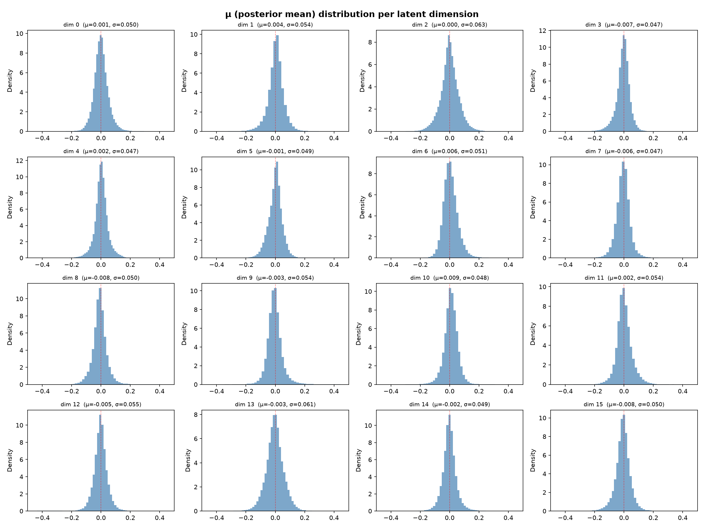
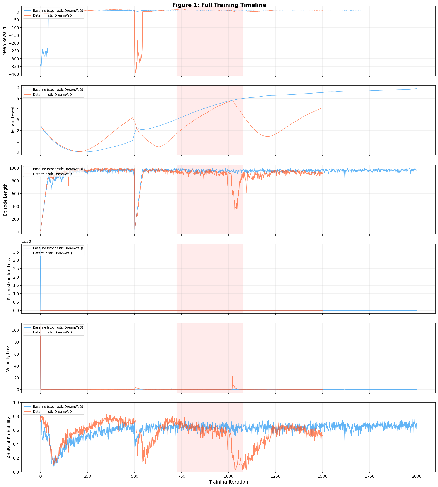

Research · Reproducing DreamWaQ (Nahrendra et al., ICRA 2023)
What is DreamWaQ's “imagination” actually imagining?
I reproduced DreamWaQ end to end and went looking for the terrain information its β-VAE encoder is supposed to learn. Then I tested a fix for its deployment gap, which didn't hold up.
Background: the DreamWaQ system
DreamWaQ (Nahrendra et al., ICRA 2023) replaces the explicitly supervised adaptation module of RMA (Rapid Motor Adaptation, RSS 2021) with a β-VAE context encoder (CENet). Given the last five steps of the robot's own proprioceptive history (joint positions, velocities, contacts, commands), the encoder produces 16 Gaussian latents. The decoder predicts the next body-frame velocity and height samples, and, as in RMA, the actor is conditioned on the latent.
The design intent is implicit terrain imagination: the latent should summarize what the feet have touched, and that summary should guide the actor on hard terrain. The central questions here were whether the latent actually carries that summary, and whether the sampling step matters to the resulting actions at all.
What I did
- Reproduced the full system (Isaac Gym, Unitree Go2) on the community implementation
curieuxjy/go2_dreamwaq. - Added a deterministic CENet variant (flat 16-wide encoder head, KL term forced to zero), faithful and β-zero stochastic tasks, and two curriculum-speed tasks for controlled experiments.
- Audited the implementation against the paper, line by line.
- Ran a posterior-collapse audit, latent interventions on a frozen actor, a causal analysis of CENet's training dynamics, and a full probing study.
- Ran controlled stability experiments across three curriculum conditions and five seeds.
- Measured the estimated-velocity deployment gap, then implemented and evaluated an AdaBoot-off training ablation against pre-registered closed-loop fall-rate criteria.
The repository contains the code, committed metrics, figures and documentation. Large checkpoints and raw
evaluation data are preserved externally and indexed by SHA-256. The single source of truth for every
number below is docs/DREAMWAQ_FACTS.md.
The reproduction
A faithful stochastic run trained cleanly for 1,500 iterations:
| Quantity | Start | End |
|---|---|---|
| Reward | 1.84 | 13.59 |
| Terrain level | 0 | 6.22 |
| CENet reconstruction loss | 0.4716 | 1.0052 |
| CENet velocity loss | 0.1841 | 0.2411 |
| Weighted KL | 0.094 | 0.060 |
The last row is the first hint that something is off with the latent: the KL term is small and barely moves. The rest of the project follows that thread.
Evidence of posterior collapse
An audit of the iteration-500 checkpoint of the stochastic baseline (256,000 samples) found textbook posterior collapse:
- KL stays near zero. Mean 0.037 nats, median 0.024, and 18% of samples below 0.01.
- No latent dimension is active. The per-dimension signal-over-noise criterion marks all 16 inactive.
- The posterior matches the prior. Mean σ is 0.9996 (std 0.030), i.e. the standard-Gaussian prior.
- Mutual information with terrain is negligible. MI between the posterior mean and terrain type is 0.0148 nats against a terrain entropy of 2.996 nats, about 0.5%.
- Sampling does not help reconstruction. Reconstruction error with the sampled latent is 0.7711, versus 0.7611 when feeding a constant zero (a ~1.4% difference).

stage1/audit_posterior_collapse.py.

This matters because the point of CENet is to produce terrain features implicitly through the latent. If the latent carries no terrain information, the mechanism the paper describes cannot be operating in this reproduction.
Why reconstruction loss climbs 113%
The reconstruction loss grows by 113% (0.4716 → 1.0052) over 1,500 iterations, even as locomotion improves. A causal analysis of the run's training scalars looked for what drives that rise.
| Quantity | Value |
|---|---|
| Correlation with terrain level | r = 0.949 |
| Correlation with reward | r = 0.255 |
| Correlation with velocity loss | r = −0.327 |
Weight updates of decoder.0 and decoder.6 after iteration 200 | exactly 0 |
| Gradient attenuation through the 4-layer decoder | ≈ 1/625 |
The interpretation that survives scrutiny: the outer decoder layers stop updating early (around iteration 200), while the curriculum keeps pushing the robot onto harder terrain. As terrain gets harder and the decoder no longer adapts, reconstruction loss rises in lockstep with terrain level. Its correlation with terrain (r = 0.949) is far stronger than with reward or velocity loss.

forensic_report.py on the run's TensorBoard scalars.
Caveat: this is descriptive correlation, not a proven mechanism. I could not cleanly separate the timing of the freeze from the growth in difficulty, so I present it as the most consistent explanation, not an established result.
Latent interventions on the frozen actor
Intervening on a checkpoint is the cleanest way to ask how much the actor depends on the latent. With the actor and CENet frozen, the mean action change caused by each perturbation was measured on 255,488 samples from 512 environments across 20 terrains:
| Intervention | Mean action change (rad) |
|---|---|
| Clamp z to zero | 0.0679 |
| Feed μ instead of sampled z | 0.0678 |
| Remove CENet entirely (zero context) | 0.1964 |
| Swap z between same-terrain pairs | 0.0926 |
| Shuffle z across terrains | 0.0943 |
| Action Jacobian w.r.t. z | 0.013 |
Three readings:
- Sampling does not matter. Clamping z to zero (0.0679 rad) and replacing it with μ (0.0678 rad) are almost identical, as expected once the posterior has collapsed.
- The z channel has a real but small effect. 0.068 rad against a mean action magnitude of 1.77 rad is about 3.8%, and its Jacobian term is by far the smallest of the three inputs (observations 0.113, velocity 0.079, z 0.013).
- No terrain-specific signal. Shuffling z across terrains changes actions no more than swapping it within a terrain (0.0943 vs. 0.0926).
A parallel in-simulation comparison (eval_mu_vs_z.py) confirmed this: there was no measurable
difference in tracking error or fall rate between the z-conditioned and μ-conditioned policies.
What μ and σ encode
The probing study (linear, MLP and random-forest probes; balanced accuracy and R²; permutation baselines; environment-wise cross-validation) asks directly what can be read out of the latent mean and the latent σ.
| Target | From μ | Chance |
|---|---|---|
| Foot contact (left hind) | 0.738 | 0.50 |
| Estimated velocity x | 0.686 | 0.50 |
| Command x | 0.628 | 0.50 |
| Terrain type (in-domain) | 0.1101 | 0.0498 |
| Terrain type (env-wise CV) | 0.0712 | 0.0528 |
| Terrain type (from sampled z) | at chance | 0.0651 |
The latent mean encodes locomotion telemetry (foot contact, estimated velocity, command) and almost no terrain identity. The in-domain terrain probe reads 0.1101 against a chance level of 0.0498, and most of that collapses under environment-wise cross-validation (0.0712 vs. 0.0528). The sampled z reads terrain at chance.
Other measures agree. The sampled latent retains no information across any target, a temporal probe on z sequences finds no more structure than single frames (segment R² = 0.0142), and z is at chance even around rare collision events. Notably, the latent σ, which is private to CENet and invisible to the policy, encodes more than μ: estimated velocity at 0.6272, command at 0.5726 and action norm at 0.4993, while terrain type stays at chance (0.0407). The information that survives lives in the part of the latent the policy cannot see.
Sensitivity analysis adds the last piece. Replacing μ with zeros moves the policy output by a KL of 2.7×10−5; perturbing z by 0.1σ moves it by 9.3×10−3; replacing z with standard-normal noise moves it by 1.85×10−2. With an effective signal-to-noise ratio of about 0.003, the sampled channel is functionally a constant.
A training collapse, and its limits
The deterministic variant (flat encoder head, no KL) produced one genuine training collapse across all runs: a long run that fell apart near iteration 1,020, at a terrain level around 4.5.

forensic_report.py on the merged TensorBoard scalars.
The controlled statistics put this in proportion. In 15 controlled 500-iteration runs (three curriculum conditions × five seeds), none collapsed. The per-condition 95% confidence interval tops out at 52%, and the pooled upper bound for these short runs is around 22%. An 80-iteration diagnostic window on a healthy deterministic run stayed healthy throughout.
The curriculum-speed manipulation did have a real effect on terrain progress (slow −1.28 levels,
original +1.11, fast +3.26; all pairwise differences significant at p = 0.008), but none on collapse. So
this is a rare, real event, observed once, with no causal story and no measured trigger. It is reported as
an outlier in reports/failure.md and the forensic report, not as a finding.
The deployment gap and the AdaBoot-off test
The final question concerned the velocity input rather than the latent. At the frozen AdaBoot-on baseline (iteration 3,000, seed 101), the policy was evaluated in closed loop with the simulator's true velocity and with CENet's estimated velocity. The deployment channel was worse: 3.62% falls vs. 1.20%, a difference of +2.42 percentage points (95% cluster CI [+1.16, +3.73]).
| Velocity input | Episodes | Falls | Fall rate |
|---|---|---|---|
| True velocity | 1,166 | 14 | 1.20% |
| Estimated velocity | 1,189 | 43 | 3.62% |
The estimator itself was nearly unbiased on these closed-loop states, so the gap is on the actor's side. The training mixture is close to the clean channel (1.54% in the 50/50 condition), and pure estimated velocity is effectively absent from training. The targeted intervention was therefore simple: disable AdaBoot so the actor receives estimated velocity on every training step. The switch was opt-in, active on every rollout step, and evaluated at the same fixed iteration-3,000 checkpoint.
| Velocity input | Episodes | Falls | Fall rate |
|---|---|---|---|
| True velocity | 1,209 | 68 | 5.62% |
| Estimated velocity | 1,201 | 53 | 4.41% |
Both pre-registered thresholds failed. On the estimated-velocity channel, the change against baseline was +0.80 percentage points (95% CI [−0.91, +2.53]), so there was no statistically conclusive improvement. The true-velocity condition regressed by +4.42 points (95% CI [+2.74, +6.10]). The run also trained less stably than the baseline: reward 3.86 vs. 8.74 at iteration 3,000, 20 negative-reward iterations vs. 1, and an earlier collapse after iteration 3,000.
The intervention was rejected. No second training seed and no alternative intervention were run. The true-velocity regression is partly out-of-distribution, because the evaluator supplies RMS-normalized true velocity while the intervention trained on raw estimated velocity, so the rejection rests on the deployment channel. That channel misses its absolute threshold and shows no improvement. No novelty is claimed: this is DreamWaQ's own "w/o AdaBoot" ablation.
Full record: final report · reproduction protocol · implementation and diff · artifact archive
Conclusions
- The sampling path is nearly invisible. The posterior collapses in this configuration, z carries about 0.5% of terrain entropy, and interventions on z move actions by about 3.8%. This did not justify a latent-side intervention.
- μ, not z, steers the policy. The actor's reliance on μ equals its reliance on z, and μ encodes locomotion telemetry, not terrain identity.
- Terrain imagination, as described in the paper, does not operate in this reproduction. No probe, intervention or shuffle finds a terrain-specific signal in the latent. The policy effectively walks blind, which is consistent with how well a blind actor performs.
- Reconstruction loss climbs because terrain difficulty does. The outer decoder layers freeze early while the curriculum advances (r = 0.949).
- The deterministic training collapse is real but unexplained. It occurred once in sixteen runs and never under controlled conditions.
- The deployment gap is behavioral. The frozen baseline falls in 3.62% of episodes with estimated velocity vs. 1.20% with true velocity.
- Removing AdaBoot did not close the gap. It reached 4.41% (estimated) and 5.62% (true), failed both thresholds and trained less stably. The investigation is closed.
The most useful result is the negative one. DreamWaQ's blind actor reproduces and performs well, which is consistent with recent work questioning how much of the benefit comes from the imagination mechanism rather than architecture and training choices. If the latent carried terrain features in this implementation, the interventions and probes should have found them. They did not. The deployment test similarly found that a plausible train/deploy matching fix did not improve the deployment channel.
Limitations
- All probe and intervention results come from a single checkpoint (iteration 500, seed 1) of a single run. Environment-wise cross-validation guards against temporal leakage, but the probes were not replicated across seeds.
- The stochastic-vs-deterministic comparison is not a pure sampling ablation, because the encoder head shape also differs.
- One simulator, one embodiment (Unitree Go2), one reward design, and no real robot.
- The causal analysis is correlational. The decoder freeze is measured; the mechanism is my interpretation.
- This does not overturn DreamWaQ. It characterizes this community implementation and checkpoint; where the paper's setup differs, those differences are exactly where the mechanism could live.
- The deployment-robustness result uses one training seed. The
_s2blocks are a second evaluation seed on the same checkpoint, not a second trained model, so seed-to-seed variance is unmeasured. - The baseline and intervention used different source revisions, and the source-matched iteration-2,000 control was not run because the intervention failed independently. Attribution to AdaBoot alone is therefore limited.
- The final evaluator disables noise and domain randomization and does not test pushes. No real-robot or push-robustness claim is made.